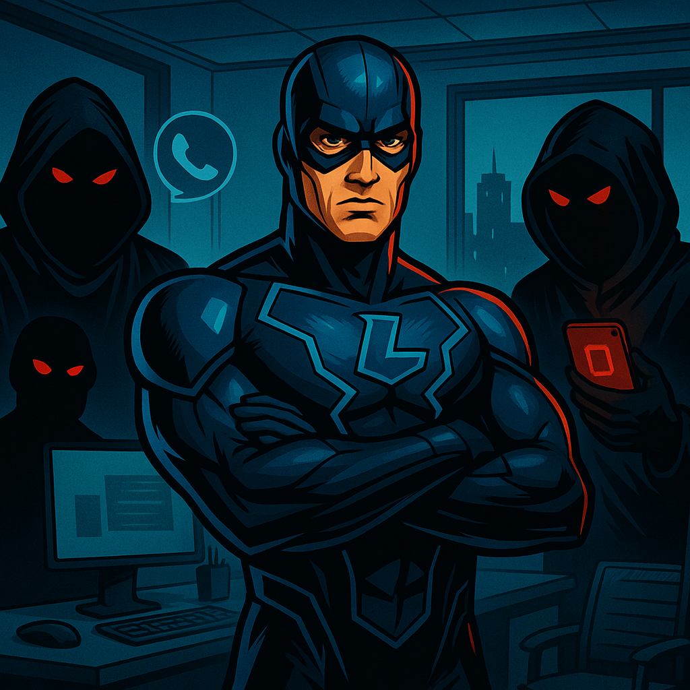

Think Before You Trust: The Cybersecurity Challenge
Learn how to spot and stop vishing attacks before they happen.

What is Vishing?
Vishing is a form of social engineering where attackers use voice calls to trick people into giving up sensitive information like passwords or account details.